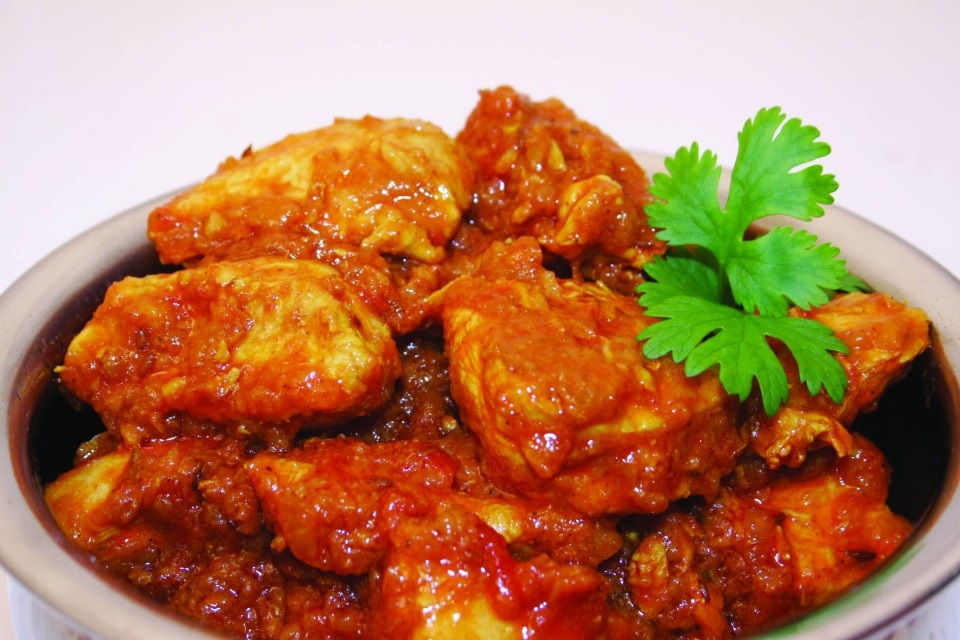
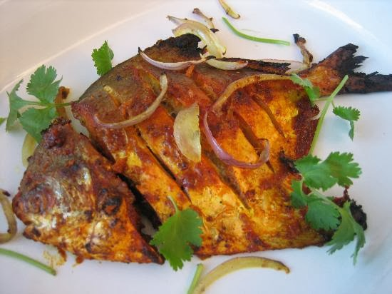

Chicken Biriyani is very famous in Bangladesh. Partially because its traditional but also because it is delicious. It is made of Rice and Chicken curry with traditional spices.
Chicken Curry is one of the local favorite dish in Bangladesh. It is just chicken marinated with traditional spices. It is cooked to perfection. Rice and Chicken curry is very famous and common combination.
Fish is very famous in Bangladesh. Fish is the national food in Bangladesh. There are many kinds of fish in Bangladesh. This is call Rupchada. This fish only can be found in the ocean.